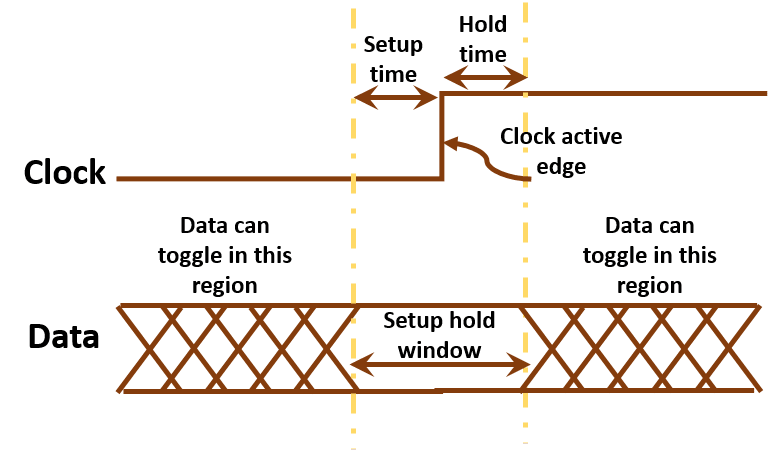

A High-Performance Static Timing Analysis Tool for VLSI Systems
Static Timing Analysis
Static timing analysis (STA) is an important step in the over chip design flow. It verifies the expected timing characteristics of a circuit and ensures the chip can provide correct function after tape-out.

A practical timer has to interact with other tools that often call the timer thousand times in an inner loop. This raises many computational challenges, such as incremental timing, parallelization, scalability, and pessimism reduction.
What is OpenTimer?
OpenTimer is a new STA tool to help IC designers quickly verify the circuit timing. It is developed completely from the ground up using modern C++ to efficiently support parallel and incremental timing. Key features include:
- Industry standard format (.lib, .v, .spef, .sdc) support
- Graph- and path-based timing analysis
- Parallel incremental timing for fast timing closure
- Award-winning tools and golden timers in CAD Contests
OpenTimer lets you quickly analyze the timing critical paths of a design so you can have reasonable turnaround time and performance.
ot> report_timing
Startpoint : inp1
Endpoint : f1:D
Analysis type : min
------------------------------------------------------
Type Delay Time Dir Description
------------------------------------------------------
port 0.000 0.000 fall inp1
pin 0.000 0.000 fall u1:A (NAND2X1)
pin 2.786 2.786 rise u1:Y (NAND2X1)
pin 0.000 2.786 rise u4:A (NOR2X1)
pin 0.181 2.967 fall u4:Y (NOR2X1)
pin 0.000 2.967 fall f1:D (DFFNEGX1)
arrival 2.967 data arrival time
related pin 25.000 25.000 fall f1:CLK (DFFNEGX1)
constraint 1.518 26.518 library hold_falling
required 26.518 data required time
------------------------------------------------------
slack -23.551 VIOLATED
We introduced a new API concept to facilitate the parallelization of incremental timing. You can use our C++ API to integrate OpenTimer to your project.
#include <ot/timer/timer.hpp> // top-level header to include
int main(int argc, char *argv[]) {
ot::Timer timer; // create a timer instance (thread-safe)
timer.read_celllib("simple.lib", std::nullopt) // read the library (O(1) builder)
.read_verilog("simple.v") // read the verilog netlist (O(1) builder)
.read_spef("simple.spef") // read the parasitics (O(1) builder)
.read_sdc("simple.sdc") // read the design constraints (O(1) builder)
.update_timing(); // update timing (O(1) builder)
if(auto tns = timer.report_tns(); tns) std::cout << "TNS: " << *tns << '\n'; // (O(N) action)
if(auto wns = timer.report_wns(); wns) std::cout << "WNS: " << *wns << '\n'; // (O(N) action)
timer.dump_timer(std::cout); // dump the timer details (O(1) accessor)
return 0;
}
Get Involved
Please visit our OpenTimer GitHub to learn more details.